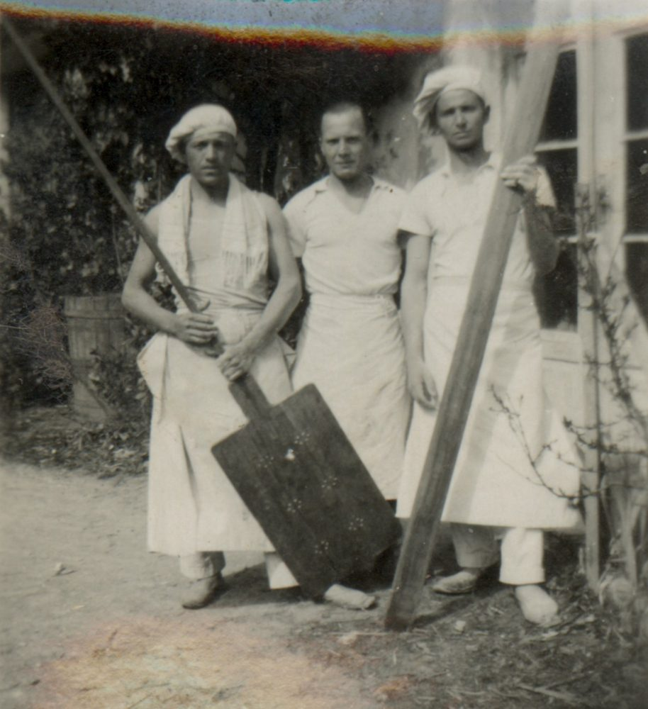
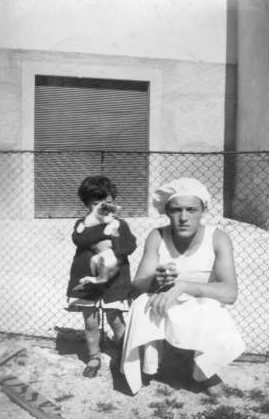
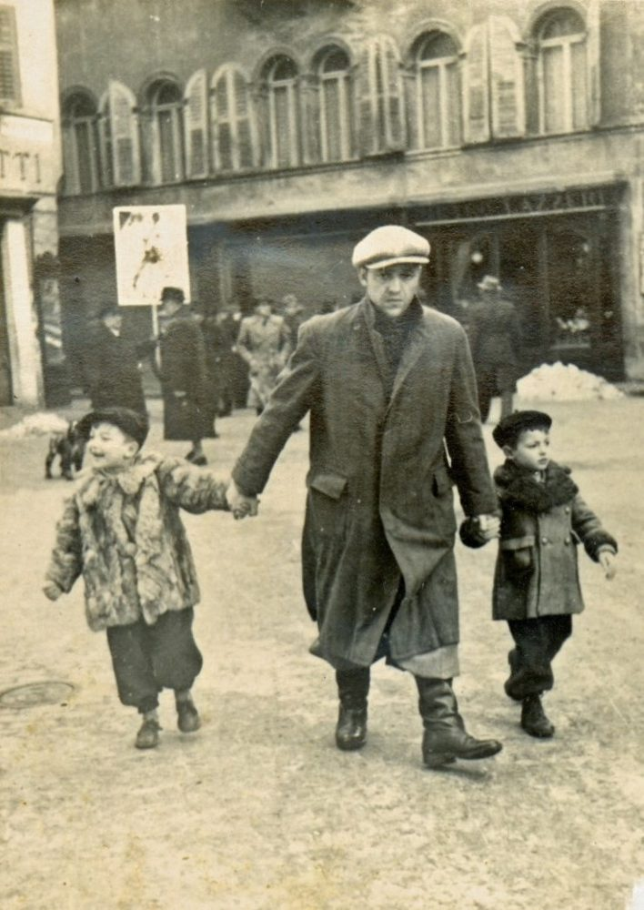

Oltre quarant'anni di storia dei fratelli Dalprà, su quella del padre.
Riccardo Dalprà è un panificatore conosciuto in città dal 1936. Dal 1971 i suoi figli raccolgono i segreti della tradizione artigianale trentina e ne fanno il cuore del loro lavoro.
Accanto al pane di ogni giorno, con le ricette avute dal padre, i fratelli Dalprà fanno prodotti da forno e dolci, e le specialità delle feste: lo zelten, la colomba e il panettone artigianali, lo strudel, la focaccia, la crostata, la torta di fregolotti e le torte di pasta lievitata.


